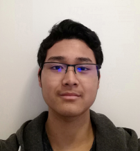

<!DOCTYPE html>
<html>
	<head>
		<link type="text/css" rel="stylesheet" href="../style.css">


	</head>


	<body>
		<div class="background">
			<div class="black_box_area">
			  <div class="black_box">
				<p class="texte_box">
				  Brian<br />
				  HO VAN CAM RICHARD<br />
				  Développeur web &amp; mobile
				</p>
			  </div>
			  


			  <div class="description">
				<p class="texte_descritpion">
				  DESCRIPTION<br />
				  <br />
				  Étudiant en informatique dans le domaine<br />
				  du développement web / mobile.<br />
				  Je suis à la recherche d&#039;une alternance
				  d&#039;un<br />
				  an à compter de septembre 2021
				</p>


				<div class="A_propos">
				  <p class="texte_a_propos">
					A PROPOS DE MOI<br />
					<br />
					Téléphone : 06 99 97 48 22<br />
					E-mail : brianhvcr&#64;yahoo.fr<br />
					<br />
					LinkedIn :
					https://www.linkedin.com/in/brian-hovan-cam-richard-01461a1b0/<br />
					GitHub : https://github.com/nairb725<br />
					<br />
					Adresse : 9, Les Larris Pourpres<br />
					95300 Cergy-Pontoise<br />
					Permis B avec voiture<br />
					<br />
					Né le 11/11/2002<br />
					Nationalité française
				  </p>


				  <p class="competences">
					COMPÉTENCES INFORMATIQUES MAÎTRISÉES<br />
					<br />
					JavaScript<br />
					NodeJS<br />
					Java<br />
					Python<br />
					HTML<br />
					CSS<br />
					Les Méthodes Agiles<br />
					UNITY<br />
					C#<br />
					PHP<br />
				  </p>
				</div>


				<div class="langues">
				  <p class="texte_langues">
					LANGUES ÉTRANGÈRES<br />
					<br />
					Espagnol : Niveau B2<br />
					<br />
					Anglais : Niveau C1 / C2<br />
					2019 : 3 semaines en famille d&#039;accueil à
					Vancouver<br />
					2018 : 6 semaines aux Etats-Unis dont 4 à<br />
					l&#039;Université UCLA<br />
				  </p>


				  <p class="experiences">
					EXPÉRIENCE PROFESSIONNELLE<br />
					<br />
					Février 2020 :<br />
					Stage chez Axa Paris – Département informatique<br />
					Missions : Découvrir les métiers de
					l&#039;informatique<br />
					Apprentissage des bases HTML et CSS
				  </p>
				</div>


				<div class="qualites">
				  <p class="qualites_texte">
					QUALITÉS<br />
					<br />
					Travail en équipe<br />
					Aime aider les gens<br />
					Toujours de bonne humeur
				  </p>


				  <p class="interets">
					CENTRS D&#039;INTÉRÊT<br />
					<br />
					Tennis de table<br />
					Badminton<br />
					Jeux d&#039;échecs<br />
					La Corée<br />
					Jeux vidéo<br />
				  </p>
				</div>


				<p class="formations">
				  FORMATIONS<br />
				  <br />
				  2020-2022 : Préparation du Titre Certifié
				  Analyste<br />
				  développeur d&#039;applications informatiques, Bac
				  &#43; 2,<br />
				  (Ecole ESIEE-IT, Cergy)<br />
				  2020 : Baccalauréat Scientifique – Option<br />
				  Sciences de la Vie et de la Terre<br />
				  (Lycée Jean De Beauce, Chartres)<br />
				</p>
			  </div>
			</div>
			
		  </div>
	</body>
</html>